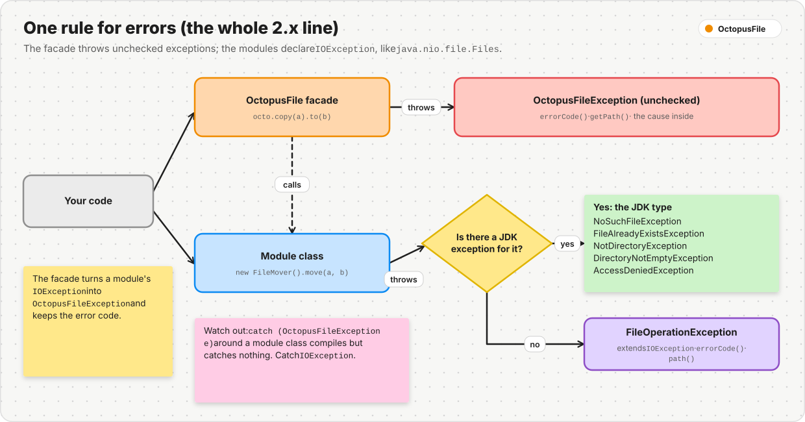

Docs › Start
Errors

Since 2.0 there is one rule for the whole library:
| Where | What is thrown |
|---|---|
The OctopusFile facade and its operations (read, write, copy…) | the unchecked OctopusFileException, with an ErrorCodes value: quick to use, nothing to declare |
Every module (modules.*, infrastructure.*) | java.io.IOException, like java.nio.file.Files: the JDK exception when there is one (NoSuchFileException, FileAlreadyExistsException, NotDirectoryException, DirectoryNotEmptyException, AccessDeniedException), otherwise FileOperationException, which keeps the ErrorCodes value |
Arguments that make no sense (a null, an impossible option) | IllegalArgumentException / NullPointerException, as in the JDK |
javatry {
OctopusFile.of().read(dir.resolve("missing.txt")).asText();
} catch (OctopusFileException ex) {
ErrorCodes code = ex.errorCode(); // machine readable: FILE_NOT_FOUND, ACCESS_DENIED, ...
String message = ex.getMessage(); // for people
}
Useful codes: FILE_NOT_FOUND, PATH_NOT_FOUND, FILE_ALREADY_EXISTS, ACCESS_DENIED, PERMISSION_DENIED, NOT_A_DIRECTORY, INVALID_PATH, COPY_ERROR, MOVE_ERROR, DELETE_ERROR, READ_ERROR, WRITE_ERROR, OPERATION_CANCELLED. Messages are in English; translate them by code in your UI.
With the modules:
javatry {
new WholeFileReader().readText(dir.resolve("missing.txt"));
} catch (NoSuchFileException ex) { // the JDK exception, as with java.nio.file.Files
// ...
} catch (FileOperationException ex) { // the other errors keep their code
ErrorCodes code = ex.errorCode();
}
FileOperationException.unchecked(ex, path) turns a module exception into the facade's OctopusFileException. Before 2.0 the reading, writing, manipulation and monitoring modules threw OctopusFileException too.
Long operations report cancellation with TransferCancelledException (an IOException).
DocExamplesTest